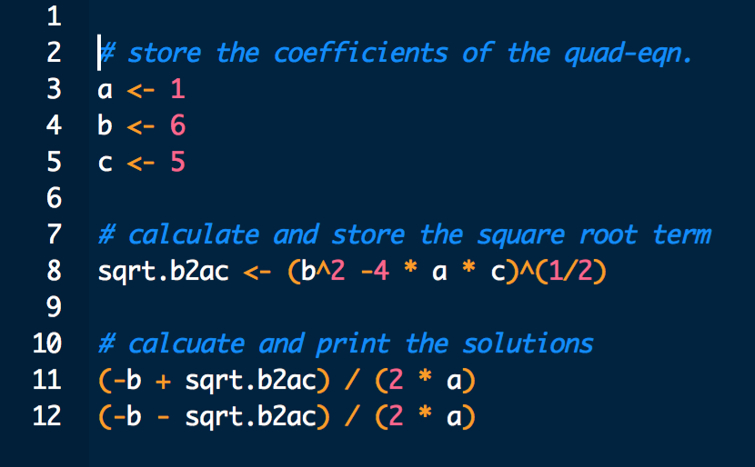
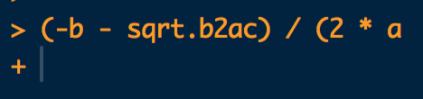

Chapter 2 Building scripts
2.1 Introduction
We have seen that using variables is useful because it enables us to break down a problem into a series of simpler steps. So far however, we have only been working in the Console. If we want to reuse a calculation when we’re working like this, we have to change a variable or two and then evaluate the expressions that do the job of solving an equation, make a graph, whatever. We also have to do all of this in the correct order, or things will not work as intended.
Working directly at the Console like this is the simplest way to use R. Generally speaking, we do not recommend working this way unless you only need to do something very simple which involves a handful of steps. For more complicated activities you should store your instructions in a script. We will look at how to do this at the end of this chapter. The aim of this section is to demonstrate how to use R to perform simple calculations and introduce a few key concepts that will help you understand how R works. At this stage – for the purposes of learning how to use R – typing expressions directly into the Console is fine.
You can see that working in the Console is not going to be practical most of the time. So what should we do? The answer is: put your sequence of R expressions into a text file, called a script (We already told you the answer earlier). Calling it a script makes it sound a bit fancy and clever—“I spent all day debugging my script”. It is not. It is a boring text file that could be opend up in something like Notepad.exe. We just call it a script to signify the fact that the text contained in the file is a series of instructions telling our computer to do something.
2.2 Writing scripts in RStudio
To open a new script in RStudio navigate to File > New File > R Script. This will open the new file in a fourth pane. This pane is the Source Code Editor we mentioned in the Get up and running with R and RStudio chapter. The name of the tab where this new file lives will be set to Untitled1 if you haven’t opened any other new R Scripts. Here is what RStudio looks like after we do this (we’ve highlighted the new pane with a red asterisk):

When you work with a script you type the required sequence of R expressions into the Editor pane, not directly into the Console. This is important—if you mix and match you will make mistakes. The worst of these is that you will write a script that seems to work, only to find it is broken when you open it up and use it again later. This usually happens because you typed something into the Console that is needed to make the whole script run when you were preparing it, but then forget to put it into the script. Just don’t mix and match between using the Console and the Editor and you will avoid this.
The easiest way to appreciate the benefits of using a script is to work with one. If you have not already done so, open up a new script using File > New File > R Script and copy-paste this into the Editor pane:
a <- 1
b <- 6
c <- 5
sqrt.b2ac <- (b^2 -4 * a * c)^(1/2)
(-b + sqrt.b2ac) / (2 * a)
(-b - sqrt.b2ac) / (2 * a)Here is a partial screenshot of the Editor pane showing this script on our computer:

MISSING SENTENCE. Syntax highlighting is a must have feature of any Editor. In a nutshell, syntax is a bit like the grammar of a computer language. It is the set of rules that determine how we form valid expressions, assign variables, and so on. The purpose of syntax highlighting is to draw attention to different components of syntax. You can see that when we use the Cobalt highlighting option, RStudio sets the background to black and displays variables in white, parentheses and arithmetic operators in orange, and numbers in red. It doesn’t matter so much what the colours are. What matters is that we have a visual means to distinguish these different kinds of elements, making it much easier to read a script.
Choose your own colour scheme
The first thing you will probably notice is that this Editor looks a little different from yours. We said earlier that RStudio was highly customisable. What we did above was change the way it does something called syntax highlighting. You can do this by navigating to Tools > Global Options…, selecting the Appearance button, and picking the Cobalt option under Editor theme (try it!).
The other kind of elements RStudio has highlighted are in blue. We added these. They are called comments. Comments in R always start with a # symbol—this is called the “hash”" symbol if you are British (or the “pound” symbol if you are North American). Lines that start with # are completely ignored by R. They exist only to allow us, the developers of a script, to add notes and explanations that remind us how it all works.
Comments are important
At this point we just want to emphasise that you should use comments to remind yourself what your R code is supposed to be doing. Use them liberally to help you understand the logic of each script you write. This is another “take our word”" for it situation – if you do not use comments, then when you come back to your precious script in a few weeks/months/years time you will have no idea what it does.
2.3 Running scripts in RStudio
The whole point of writing a script is ultimatley to run it. The phrase “run our code” is shorthand for “send a number of R expressions to the R interpreter to be read and evaluated”. The latter is tedious to write (and read) over and over again, so we will just write “run your/my/our code”. We could run the code in the above script by copying and pasting it into the Console, but this is inefficient. Instead of relying on cut and paste, RStudio gives us different ways to run our code:
There is a
Runbutton at the top right of the Editor pane. As you might imagine, clicking on this will run some code. If you haven’t highlighted anything in the Editor, this runs whichever line the cursor is at, i.e. it runs just that one line. If you had highlighted a region inside the Editor, this button will run all of that in sequence.We do not like clicking buttons. If you are like us, you are in luck. Pressing Control+Enter (or Command+Enter on a Mac) does exactly the same thing as the
Runbutton. It also uses the same rules to decide which bits of code to run or not4.
Using which ever method you prefer, run every line in the script you just started. Here is what should happen at the Console when you do this:
a <- 1
b <- 6
c <- 5
sqrt.b2ac <- (b^2 -4 * a * c)^(1/2)(-b + sqrt.b2ac) / (2 * a)## [1] -1(-b - sqrt.b2ac) / (2 * a)## [1] -5This works exactly as though you had typed or pasted the sequence of R expressions into the Console, hitting Enter each time you get to the end of a line. What this means is that we can use this script to find the solutions to any quadratic equation with real roots (if you know what we mean by the phrase “real roots”, great, if not, it does not really matter). All you have to do is edit the values assigned to a, b and c and then rerun the whole script. Do not rerun bits of it. Rerun it all. Try it. Just be sure to only use sets of values where \(b^2 > 4ac\) or you will see the dreaded NaN.
Now that we have a script that does something a little useful we might wish to use it again. It is just a text file, so we can save the script as we would any other file. We can do this using the familiar menu-based approach (File > Save As...) or via the keyboard shortcut Control+S (or Command+S on a Mac). The only thing to keep in mind is that you should use the file extension .R or .r, e.g. my_great_script.R. This is because RStudio uses the file extension to detect the fact that a file is a script and not an ordinary text file. If you do not do this, then next time you open up the file in RStudio you won’t be able to access the fancy Editor features like syntax highlighting, nor will you be able to send lines to the Console without using copy-paste.
From now on you should always work with scripts. No more typing into the Console!
2.4 Spotting problems
We may as well get something out of the way early on: you will ask R to do something that turns out to contain an error.
Mistakes happen all the time when
You will do this a lot. It’s not a problem when this happens. When it does though, it’s important to step back and work out what went wrong.
2.4.1 The dreaded +
Be careful when you highlight code to run. RStudio will run exactly the text you highlight. If you start or finish the highlighted region in the middle of an expression then one of three things will usually happen. If you are lucky you will generate an error, since you end up running only part an expression that is not itself a valid expression. We say this is lucky because the error will at least be easy to spot. If you are unlucky, you might end up running part an expression that is itself a valid expression. This is harder to spot because it won’t generate an error, and it will probably create problems further down the line.
The third outcome is that your Console will look something like this (ignore the colours – we am still using that Cobalt theme):

What happened? Look carefully at the little snippet of R code we sent to the Console. It is not a complete R expression because it is missing a closing parenthesis, ). When R receives only part of an expression like this, which has correct syntax but is not complete, it sits and waits for the rest of the expression. This is what the + at the Console signifies. When you see this happen you have two options. You can manually type in the missing part of the expression and hit Enter, or you can hit the Escape key to return you to the prompt > and start again. The first option is very error prone, so we would generally do the latter.
2.4.2 Errors
Here is an example of what happens at the Console when you generate an error:
xyz + 2## Error in eval(expr, envir, enclos): object 'xyz' not foundIn general terms, what happened is that R read in the instruction xyz + 2, tried to evaluate it, and found it could not. This is because the variable xyz does not exist. Upon running into the error, R printed something to the screen to tell us we have made a mistake (“Error: object ‘xyz’ not found”).
When this happens we say R has “thrown an error”. We know this because the message is in a warning colour (prbably red or orange—it depends how RStudio is set up) and it contains the word Error. The bit after the : is an attempt by R to tell me what went wrong. You should always read your error messages. They will be incomprehensible at first, but as you fix the many mistakes you will inevitably make, they will start to make more sense and become helpful (usually—sometimes they make no sense whatsoever, even to experienced users). This way of learning only works if you read the error messages in the first place though.
We can also run lines of code via the
Code > Run Lines. This is easily the most inefficient method after cut and paste. It’s only there in case we forget our keyboard shortcut or cannot remember where the run button is.↩